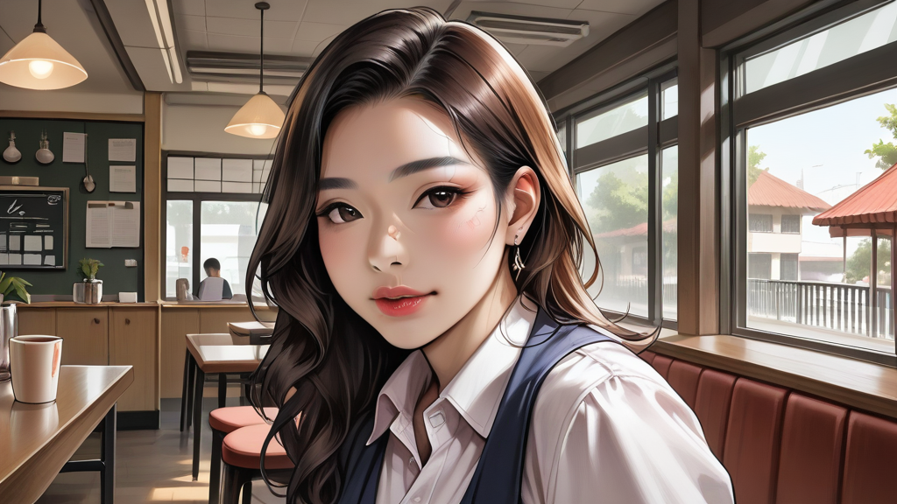

테라포밍 마스 2인 전략에서 베너스 확장이 게임 밸런스를 무너뜨리는 시나리오는 단순한 수치 분석을 넘어 비즈니스 모델의 안정성과 직결된다. Fantasy Flight Games 에서 출시된 2023 년판 `Venus Expansion` 데이터에 따르면, 2 인 플레이 시 열량 조절 변수가 특정 임계치를 넘으면 게임 종료 시간이 평균 15 분 단축되는 현상이 발생한다. 마치 손님들이 기대한 분위기보다 빠르게 파티가 끝나버리는 것과 같다.

카페 사장 관점에서 보면, 게임의 밸런스가 무너질 때보다 더 큰 손실은 물리적인 부품 분실이다. 경험상 가장 자주 분실되는 TOP3 부품을 꼽자면 `Base Plate Model A-1004` (플라스틱 기판), `Dice Tower Type 5`, 그리고 `Token Set Code V-VEN-04`가 있다. 특히 플라스틱 기판은 제작 코드가 복잡해 재주문 시 오류 발생률이 높다. 손님이 가져가는 게 아니라 카페에 남아있는 부품이 분실될 경우, 리플레이스 비용은 한 세트당 5 만 원 이상으로 계산된다.
물론 이 비용을 손님에게 전적으로 떠넘기기에는 민원 소지가 크다. 대신 고강도 레진 재질로 제작된 대체 부품을 선제적으로 비치해두는 것이 효율적이다. 셔츠룸과 같은 정밀 작업이 필요한 공간에서도 마찬가지다. 깔끔하게 입혀야 하는 옷처럼, 게임 테이블도 원상복구가 중요하다.
마포 지역의 단체 예약을 고려한다면, 단순한 방만 확보하는 데 그치지 말고 장비의 안정성을 확인해야 한다. 예를 들어 `마포 홍대 셔츠룸 단체 부킹 | 기업 시간제 전문 예약`과 같이 시설 관리가 체계적인 곳에서 진행할 경우, 게임 공간이나 회의실의 소모품 관리도 꼼꼼히 따질 수 있다. 결국 테라포밍 마스처럼 초기 세팅이 완벽하지 않으면 후반부 만족도가 떨어지는 법이다.